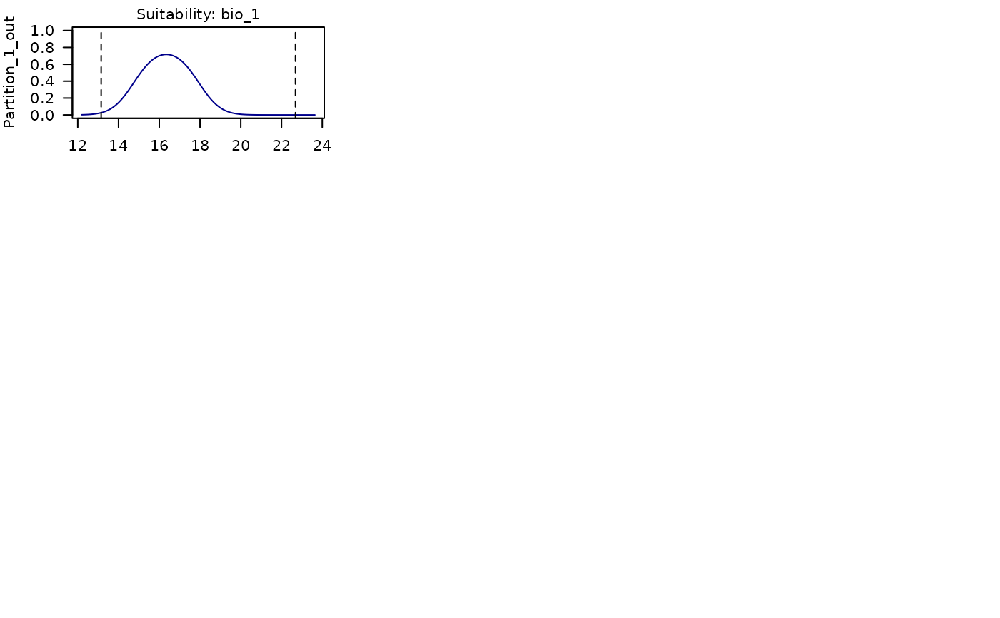

Response curves for selected models according to training/testing partitions
Source:R/partition_response_curves.R
partition_response_curves.RdVariable responses in models selected after model calibration. Responses are based on training partitions and points are testing presence records.
Usage
partition_response_curves(calibration_results, modelID, n = 100,
averages_from = "pr_bg", col = "darkblue",
ylim = NULL, las = 1, parallel = FALSE,
ncores = NULL, ...)Arguments
- calibration_results
an object of class
calibration_resultsreturned by thecalibration()function.- modelID
(character or numeric) number of the Model (its ID) to be considered for plotting.
- n
(numeric) an integer guiding the number of breaks. Default = 100
- averages_from
(character) specifies how the averages or modes of the variables are calculated. Available options are "pr" (to calculate averages from the presence localities) or "pr_bg" (to use the combined set of presence and background localities). Default is "pr_bg". See details.
- col
(character) color for lines. Default = "darkblue".
- ylim
(numeric) vector of length two indicating minimum and maximum limits for the y axis. The default, NULL, uses
c(0, 1).- las
(numeric) the stile of axis tick labels; options are: 0, 1, 2, 3. Default = 1.
- parallel
(logical) whether to fit the models in parallel. Default is FALSE.
- ncores
(numeric) number of cores to use for parallel processing. Default is NULL and uses available cores - 1. This is only applicable if
parallel = TRUE.- ...
additional arguments passed to
plot.
Value
A plot with response curves for all variables used in the selected model
corresponding to modelID. Each row in the plot shows response curves
produced with training data that leaves out the partition laveled. The points
represent the records left out for testing.
Details
Response curves are generated using training portions of the data and points showed are the ones left out for testing. The partition labeled in plot panels indicates the portion left out for testing.
The response curves are generated with all other variables set to their mean values (or mode for categorical variables), calculated either from the presence localities (if averages_from = "pr") or from the combined set of presence and background localities (if averages_from = "pr_bg").
For categorical variables, a bar plot is generated with error bars showing variability across models (if multiple models are included).
Examples
# Example with maxnet
# Import example of calibration results
data(calib_results_maxnet, package = "kuenm2")
# Options of models that can be tested
calib_results_maxnet$selected_models$ID
#> [1] 192 219
# Response curves
partition_response_curves(calibration_results = calib_results_maxnet,
modelID = 192)
